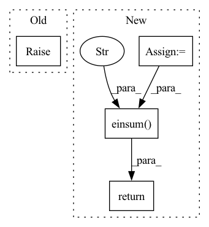

Pattern ID :4575

Before Change
if M: // if not None.
...
...
raise NotImplementedError
After Change
:param V: (N, heads, L, H // heads)
:return: H_all (N, L, H)
N = Q.shape[0]
// down-scale them to prevent
Q /= np.sqrt(self.hidden_size)
K /= np.sqrt(self.hidden_size)
Sims = torch.einsum("neax,nebx->neab", Q, K) // ... -> (N, heads, L, L)
if self.M: // masked self attention
Sims[self.M.expand(N, self.heads, self.max_length, self.max_length)] = float("-inf")
Attentions = torch.softmax(Sims, dim=2) // (N, heads, L, L)
// (N, heads, L, L) * (N, heads, L, H // heads) -> (N, heads, L, H // heads)
Contexts = torch.einsum("neab,neax->neax", Attentions, V)
Concats = Contexts.reshape(N, self.max_length, self.heads) // ... -> (N, L, H)
H_all = self.W_o(Concats) // (N, L, H) * (H, H) -> (N, L, H)
return H_all
In pattern: SUPERPATTERN
Frequency: 4
Non-data size: 4
Instances
Fragment ID: 16536700
Project Name: eubinecto/dekorde
Commit Name: 6cd311d7d3499fce627b620b64629ef7734776b0
Time: 2021-10-08
Author: eubinecto
File Name: dekorde/components/mha.py
M Class Name: MultiHeadAttentionLayer
N Class Name: MultiHeadAttentionLayer
M Method Name: scaled_dot_product_attention(4)
N Method Name: scaled_dot_product_attention(5)
M Parent Class: torch.nn.Module
N Parent Class: torch.nn.Module
M File Name: dekorde/components/mha.py
N File Name: dekorde/components/mha.py
M Start Line: 37
M End Line: 50
N Start Line: 58
N End Line: 70
'>
Before Change
def _jacobian_wrt_weight_sandwich_diag_to_full(
self, x: Tensor, val: Tensor, tmp_diag: Tensor) -> Tensor:
raise NotImplementedError
def _jacobian_wrt_weight_sandwich_diag_to_diag(
self, x: Tensor, val: Tensor, tmp_diag: Tensor) -> Tensor:
After Change
def _jacobian_wrt_weight_sandwich_diag_to_full(
self, x: Tensor, val: Tensor, tmp_diag: Tensor) -> Tensor:
jacobian = self._jacobian_wrt_weight(x,val)
return torch.einsum("bji,bj,bjq->biq", jacobian, tmp_diag, jacobian)
def _jacobian_wrt_weight_sandwich_diag_to_diag(
self, x: Tensor, val: Tensor, tmp_diag: Tensor) -> Tensor:
'>
Fragment ID: 16536703
Project Name: machinelearninglifescience/stochman
Commit Name: 560f25a3a9d916e9f28f76e50a23b0ede1a1ae0a
Time: 2022-04-14
Author: miani.1996@gmail.com
File Name: stochman/nnj.py
M Class Name: Linear
N Class Name: Linear
M Method Name: _jacobian_wrt_weight_sandwich_diag_to_full(4)
N Method Name: _jacobian_wrt_weight_sandwich_diag_to_full(4)
M Parent Class: nn.Linear,AbstractJacobian
N Parent Class: nn.Linear,AbstractJacobian
M File Name: stochman/nnj.py
N File Name: stochman/nnj.py
M Start Line: 141
M End Line: 141
N Start Line: 144
N End Line: 145
'>
Before Change
def _jacobian_wrt_weight_sandwich_full_to_full(
self, x: Tensor, val: Tensor, tmp: Tensor) -> Tensor:
raise NotImplementedError
def _jacobian_wrt_weight_sandwich_full_to_diag(
self, x: Tensor, val: Tensor, tmp: Tensor) -> Tensor:
After Change
def _jacobian_wrt_weight_sandwich_full_to_full(
self, x: Tensor, val: Tensor, tmp: Tensor) -> Tensor:
jacobian = self._jacobian_wrt_weight(x,val)
return torch.einsum("bji,bjk,bkq->biq", jacobian, tmp, jacobian)
def _jacobian_wrt_weight_sandwich_full_to_diag(
self, x: Tensor, val: Tensor, tmp: Tensor) -> Tensor:
tmp_diag = torch.diagonal(tmp, dim1=1, dim2=2)
'>
Fragment ID: 16536708
Project Name: machinelearninglifescience/stochman
Commit Name: 560f25a3a9d916e9f28f76e50a23b0ede1a1ae0a
Time: 2022-04-14
Author: miani.1996@gmail.com
File Name: stochman/nnj.py
M Class Name: Linear
N Class Name: Linear
M Method Name: _jacobian_wrt_weight_sandwich_full_to_full(4)
N Method Name: _jacobian_wrt_weight_sandwich_full_to_full(4)
M Parent Class: nn.Linear,AbstractJacobian
N Parent Class: nn.Linear,AbstractJacobian
M File Name: stochman/nnj.py
N File Name: stochman/nnj.py
M Start Line: 122
M End Line: 122
N Start Line: 134
N End Line: 135